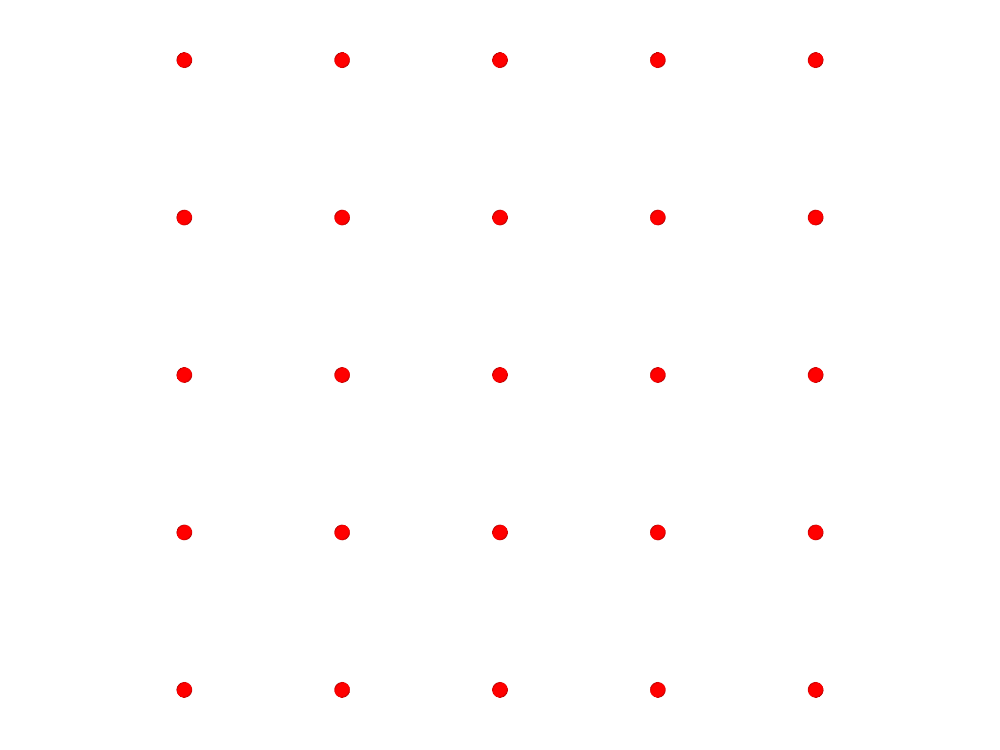
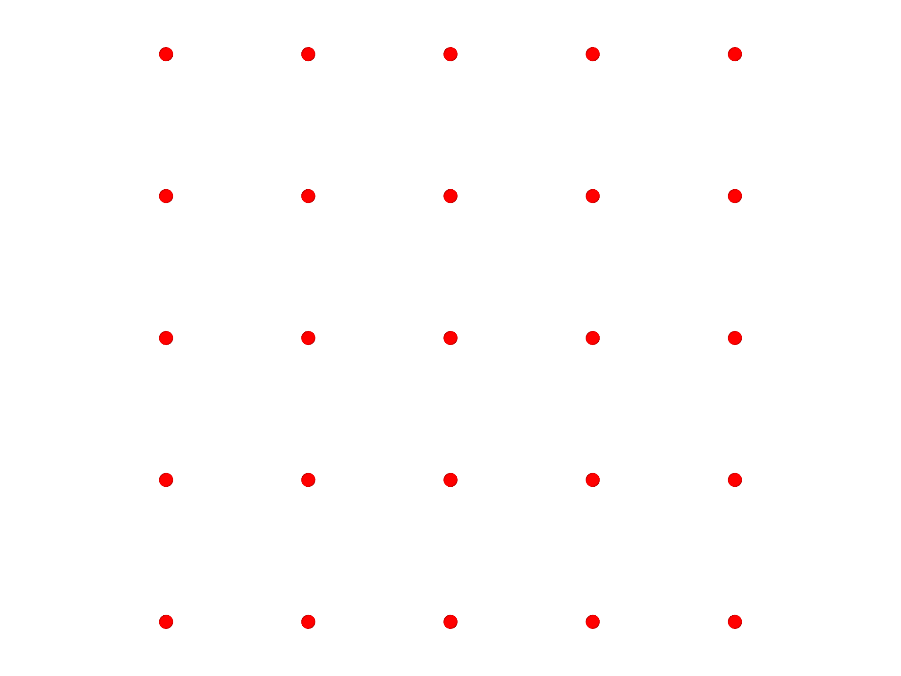
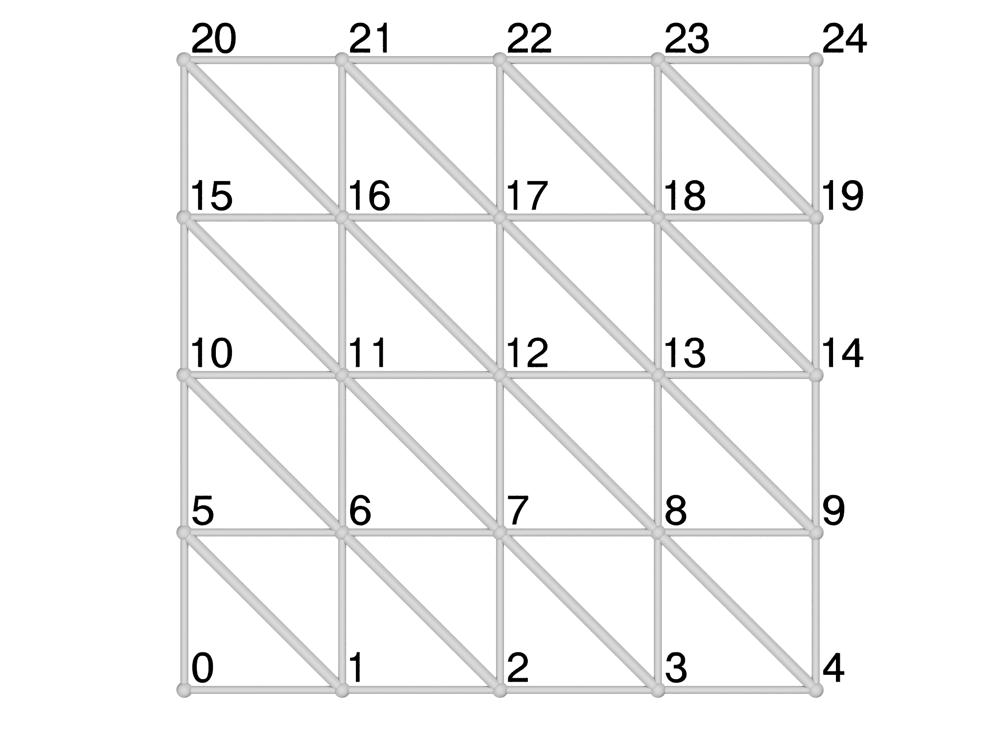
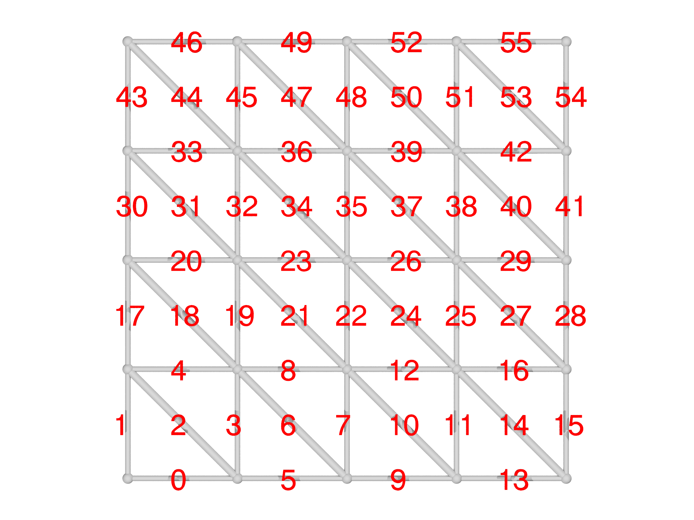
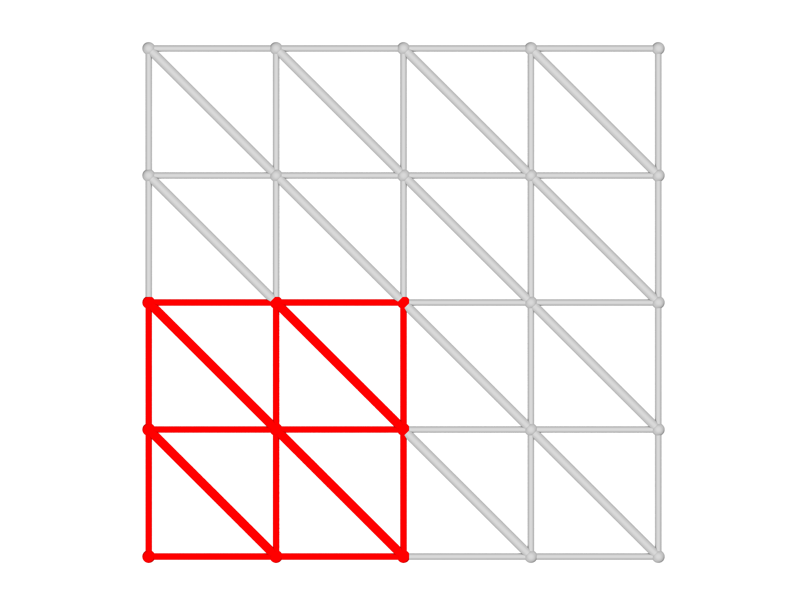
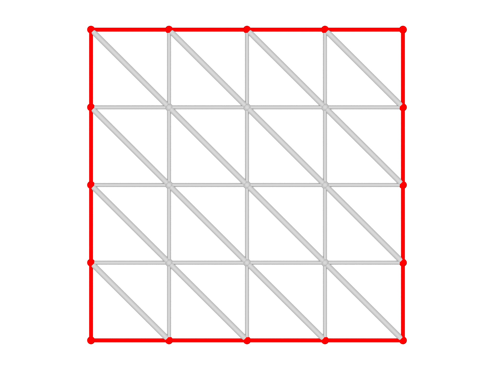
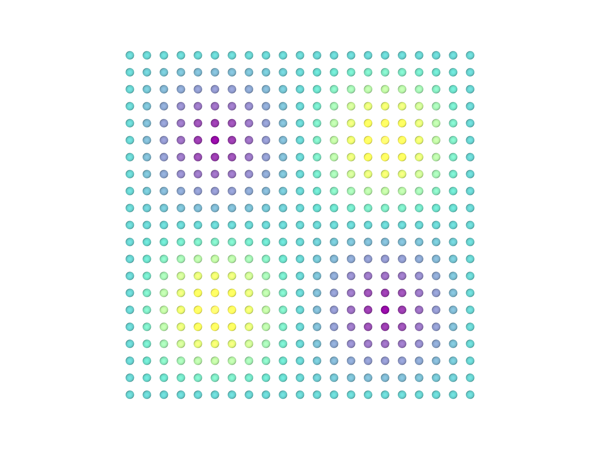
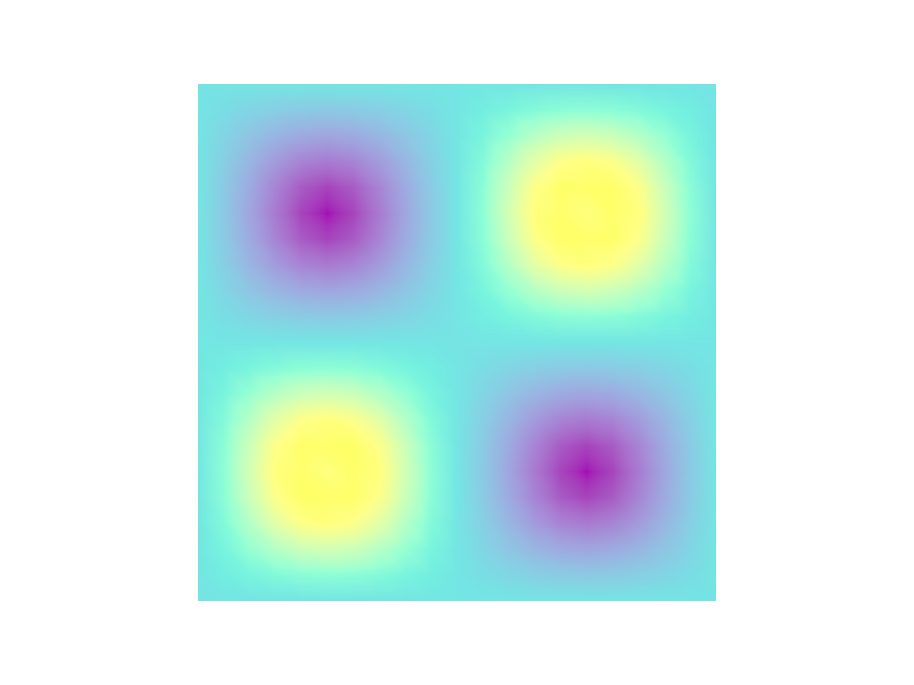
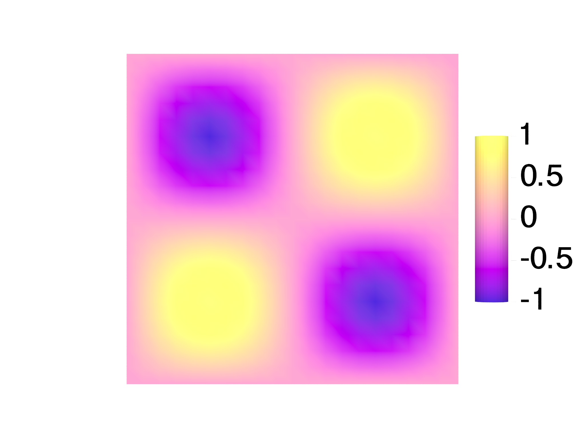

The plot module
AB C
C
grade option. C The color of the mesh can
be chosen with the color option.The plot module offers a convenient way to visualize Meshes, Fields
and Selections. To illustrate its use, we'll create a simple Mesh,
import meshtools
var m = AreaMesh(fn (u,v) [u, v, 0], -1..1:0.2, -1..1:0.2)
m.addgrade(1)
and an associated scalar Field,
var f = Field(m, fn (x,y) x*y)
Meshes
To visualize the Mesh, use the plotmesh function
var g = plotmesh(m)
which outputs a Graphics object, which we'll describe more fully in
the Graphics Section below. By default, plotmesh shows
only the highest grade element presenthere grade 2 or facetsas shown in
Fig. 6.1A. To show other grades, use the grade
option:
var g = plotmesh(m, grade=[0,1])
which shows points and edges as shown in Fig. 6.1B.
You can control the color of the Mesh with the color option as shown
in Fig. 6.1C:
var g = plotmesh(m, grade=0, color=Red)
To display particular selected elements of a mesh, you can use the
optional selection argument and supply a Selection object.
var sel = Selection(m, fn (x,y,z) x^2+y^2<1)
sel.addgrade(2)
var g = plotmesh(m, grade=[0,2], selection=sel)
Mesh labels
AB
It's sometimes helpful to be able to identify the id of a particular
element in a Mesh, especially for debugging purposes. The
plotmeshlabels function is designed to facilitate this as shown in
Fig. 6.2. You can select which grade to draw ids
for and specify their color, size and draw direction. It's also possible
to give an offset, which can be a list, matrix or even a function, that
adjusts the placement of the labels relative to the center of the
element. Here we offset them a little above and to the right:
var glabel = plotmeshlabels(m, grade=0, color=Black, offset=[0.025,0.025,0])
The plotmeshlabels function only draws labels, not the mesh itself, so
we typically combine it with plotmesh and display both:
var gmesh = plotmesh(m, grade=[0,1])
var g = gmesh+glabel
To show the grade 1 element ids, for example, we might use:
var glabel = plotmeshlabels(m, grade=1, color=Red, offset=[-0.05,-0.05,-0.03])
Selections
AB
When setting up a problem in morpho, it's very common to use Selection
objects to apply Functionals to limited parts of a Mesh. It's essential
to check that the Selections are correct, and plotselection provides
an easy way to do this. To illustrate this, let's select the lower right
hand elements in the Mesh,
var s = Selection(m, fn (x,y,z) x<=0 && y<=0)
s.addgrade(1)
and visualize the Selection as shown in Fig. 6.3A:
var g = plotselection(m, s, grade=[0,1])
Similarly, we can select the boundary,
var bnd = Selection(m, boundary=true)
and visualize the selection as shown in Fig. 6.3B:
var gbnd = plotselection(m, bnd, grade=[0,1])
Fields
Another important use of the plot module is to visualize scalar Field
objects. To illustrate this, we'll create an AreaMesh that has more
points,
var m = AreaMesh(fn (u,v) [u, v, 0], -1..1:0.1, -1..1:0.1)
and a corresponding Field object:
var f = Field(m, fn (x,y,z) sin(Pi*x)*sin(Pi*y))
It's actually the third lowest energy eigenmode of a square drum, or equivalently the \((1,1)\) state of a 2D infinite square well in quantum mechanics.
By default, plotfield draws points at which the Field is defined, and
colors them by the value as in Fig.
6.4A:
var g = plotfield(f)
Alternatively, plotfield can draw higher order elements and
interpolate the coloring if you select the style option appropriately as
shown in Fig. 6.4B:
var g = plotfield(f, style="interpolate")
To aid interpretation of these plots, it's common to display a ScaleBar object alongside the plot. These have quite a few options, including the position and size, as well as the number of ticks and text layout.
var sb = ScaleBar(posn=[1.2,0,0], length=1, textcolor=Black)
The scalebar is the then supplied as an optional argument to
plotfield. Here, we also use a different colormap object:
var g = plotfield(f, style="interpolate", scalebar=sb, colormap=PlasmaMap())
The color module supplies a number of colormaps that you can try:
ViridisMap is used by default, but PlasmaMap, MagmaMap and InfernoMap
are also recommended and have been specially formulated to be accessible
to users with limited color perception.
The morpho versions are adapted from Simon Garnier, Noam Ross, Robert Rudis, Antônio P. Camargo, Marco Sciaini, and Cédric Scherer (2021). viridis(Lite) - Colorblind-Friendly Color Maps for R. viridis package version 0.6.2.
GrayMap and HueMap are also available.
ABC